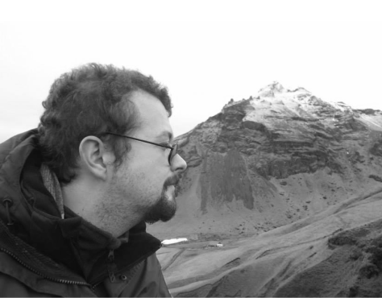

Mathematical biologist
Mathematics for living systems
I'm a Reader in Applied Mathematics at Cardiff University. I use mathematical models to study biological patterns, cell movement and questions in health and ecology.
Powered by VisualPDE.
Research and engagement
I study how muscle stem cells use protrusions called blebs to move along muscle fibres, helping them reach and repair damaged tissue.
I'm also interested in how chemical reactions and diffusion combine to produce biological patterns, building on Alan Turing's theory of morphogenesis.
My outreach work has taken me around the world to give popular maths lectures. I've also:
- worked with the BBC;
- illustrated Marcus du Sautoy's book The Number Mysteries;
- worked on Dara O'Briain's School of Hard Sums; and
- helped create two mathematics galleries at the Science Museum, London.